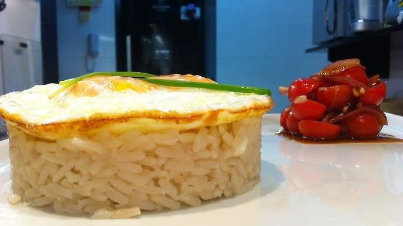

Roskovo o VAPT VUPT brasileiro
Document

O Prato tipico brasileiro
Esté é um prato genuinamente brasileiro, não a nada mais brasileiro que um tipico Roskovo, feito a partir dos ingredientes nobres da culinária brasileira e que encontramos em qualquer dispensa
Ingredientes
Passo a Passo
- Numa panela dore o Alho
- Adicione o arroz
- Adicione sal a gosto e termine o preparo
- Em uma frigideira agora, faça o ovo (Quantos julgar necessário)
- Em seguida coloque a quantidade de arroz necéssario
- Agora é só comer :)